Gaps: the idle stretches cut out of a picture
A long range with a few rare transfers makes a useless picture: thin needles on a flat line. With gaps on, the picture and the WaveDrom you save from the viewer leave out the stretches where nothing happens, and put the transfers side by side with a break between them. A small feature with a few knobs — idle, keep, the signals the gaps follow, the clock they count — explained here one by one.
What a gap is, and where it applies
A gap is a stretch of time where none of the signals the gaps follow changes for at least idle; all of it but keep after the last change and keep before the next one is left out, and a narrow break column takes its place. The time axis goes on with the real time after each break, so every value under the axis is still a true time of the dump.
Gaps change what you save, never what you look at:
- the pictures of the right button's menu — Copy image, Save image as PNG, Save image as SVG;
- the WaveJSON of Save as WaveDrom / Copy WaveDrom — one
|cell per break, in every wave at the same cell, as stock WaveDrom draws its gaps; - the static SVG figures of a page (
"render": "svg"views,<script type="WaveDrom">), when their settings turn gaps on; - on the command line,
vcd2wavedrom.py --auto-gapand the MCP toolwave_page(auto_gap) cut the same way when they write WaveJSON.
The viewer itself always shows continuous time: zoom, cursor and measurements stay exact.
The example in this guide is a 100 MHz stream with five rare packets in 10 µs (valid, ready, data,
last), the sender's state, an irq after each packet, a packet counter frames and a slow
heartbeat hb that toggles every 64 cycles. make guide-shots writes the dump and its page to
out/guides/stream.html. In the viewer, the whole run:
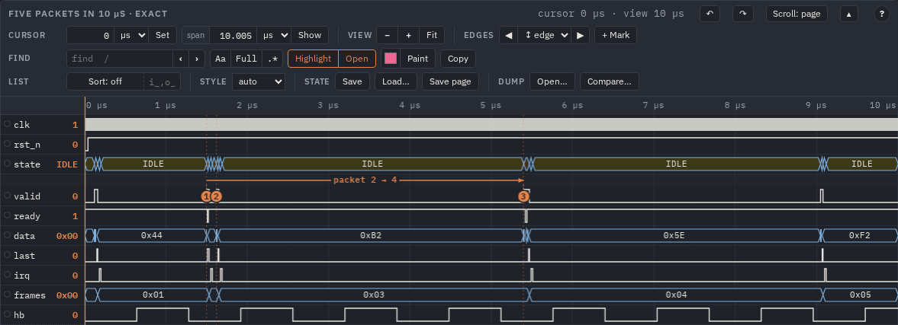
hb is the only signal
that looks busy.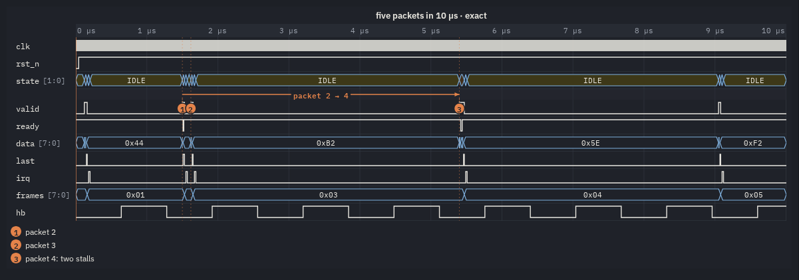

+1.25 µs · 125 clk) and the clock cycles of each part
(23 clk). The bookmarks and the arrow between packets 2 and 4 are drawn across the breaks.Quick start
- Open a page and set the window (or ctrl+drag a range, or highlight / select the rows) you want in the picture: the picture takes the measured range, else the window; the selected run of rows, else the highlighted rows, else the rows on the screen.
- Right-click on the waves and hover Gaps ▸: a submenu opens.
- Tick the check box. The label becomes Gaps: N — the number of breaks the current range would get.
- Adjust idle and keep if needed (clock cycles,
16, or a time,2us). - If a slow or free-running signal keeps every stretch busy, right-click the signals that matter and pick By this signal: its changes kept.
- Pick Save image as PNG / SVG or Save as WaveDrom in the main menu.
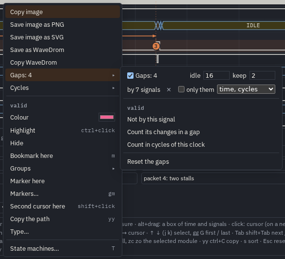
valid. First row: on / off with the number of breaks, idle and
keep. Second row: which signals the gaps follow (by 7 signals ✕; with no pick: by the signals drawn), the
clock and the counted signals when set, only them, and the texts (time, cycles /
+ changes in a gap / no texts). Then the role of the signal clicked, and
Reset the gaps.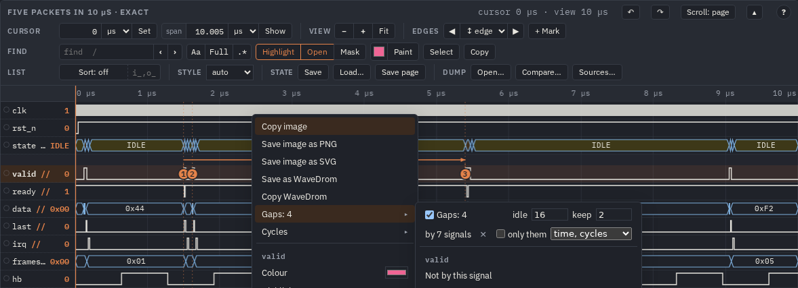
// after their names in the names column.How a gap is found
For the range of the picture and its rows:
- The changes. Every value change of the signals the gaps follow — by default every signal drawn, a group's own value too — is a
point in time. The clock that the gaps count is never a change; with no signals picked, no other clock is either (a 1-bit
*clk*/*clock*that toggles). The times of the bookmarks count as changes, so a bookmark is never cut out. - The stretches. Between two neighbouring changes (and between the ends of the range and the first / last change), a stretch at least idle long is a candidate.
- What stays. keep after the earlier change and keep before the later one stay. With a clock, the ends of the cut are put on its rising edges, so the cycle of a change and keep more stay whole.
- Too short. A cut shorter than two clock cycles is not made.
All the rows of the picture are cut at the same times: one cut for every signal, so the parts line up and every column of the picture is one moment. The axis restarts with the real time after each break; the arrows still join their bookmarks, and an arrow across a break shows the latency with the idle time cut out of its length (its label is yours).
idle: how long nothing must change
idle is the shortest stretch that is cut. A number is clock cycles (16), a text with a unit is a time
(2us, 500ns). The default is 16 cycles. A larger idle keeps the shorter pauses as they are, so the rhythm of
close transfers stays visible and only the long silences go.
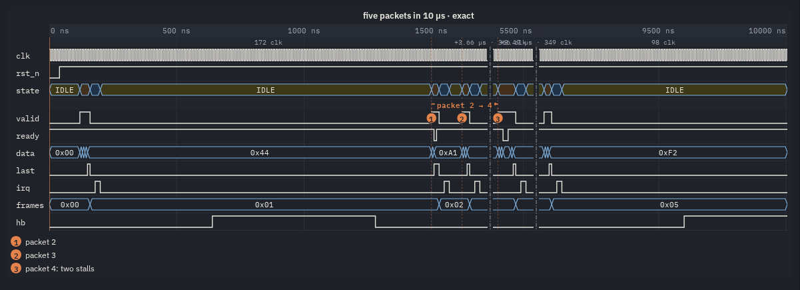
keep: how much stays around each change
keep is what stays after the last change before a gap and before the first change after it: a little context so a pulse does not
touch the break. Cycles or a time, as idle; the default is 2 cycles, 0 cuts right at the cycle of the change.
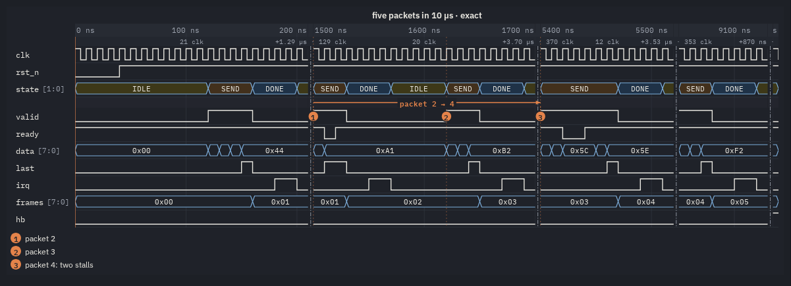
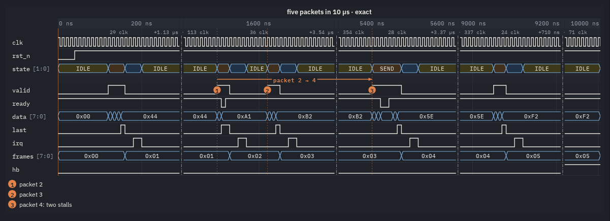
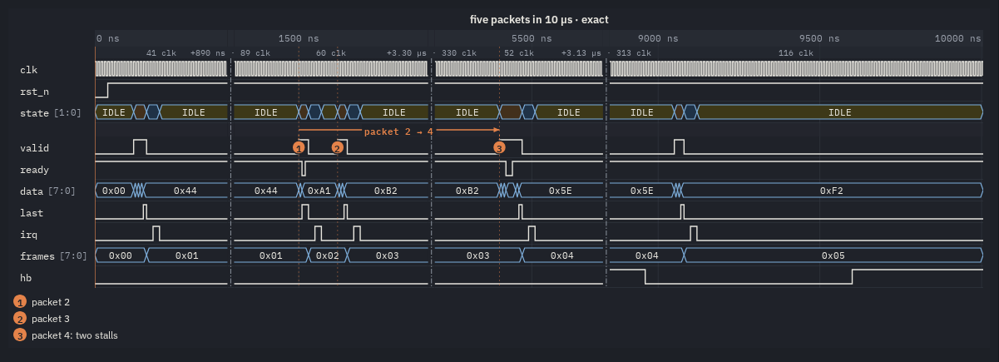
1us, keep 200ns. With these values the 1.2 µs between packets 1 and 2 is
cut too (it is longer than 1 µs), and each part keeps 200 ns of quiet on both sides.What is cut is the stretch minus keep on both sides, and at least two cycles: a pause shorter than 2 × keep + 2 cycles stays whole, however long idle allows. With idle 16 and keep 8 a 16-cycle pause has nothing left to cut. If the menu says Gaps: 0, lower keep (or idle).
The signals the gaps follow
By default every signal drawn counts. That is right for a handful of handshake signals, and wrong as soon as one signal changes all the time:
a slow heartbeat, a free-running counter, a timestamp, a second clock domain's data. Here hb toggles every 64 cycles and chops every
pause into small pieces:
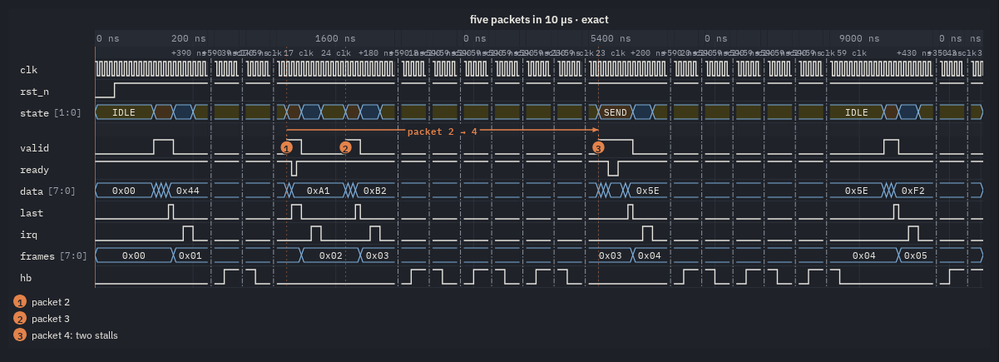
hb is a change, so a pause becomes several parts with a break between
each; the texts under the axis crowd.Pick the signals that matter instead. Right-click a row and choose By this signal: its changes kept; on a selected
run (shift+click names) or the highlighted rows (ctrl+click), the item reads By the N: their changes kept and takes them all.
The picked signals are marked // in the names column, and the second row of the submenu reads by N signals ✕; ✕ goes back
to every signal. Not by this signal removes one.
The other rows of the picture are still drawn, cut at the same times — hb is drawn above, with its toggles in the left-out
stretches simply not shown (see the texts to count them).
only them
Once some signals are picked, the submenu offers only them: the picture and WaveDrom take only the signals the gaps follow (plus the clock and the counted signals, when you set them) — a quick way to a clean protocol figure out of a crowded view.
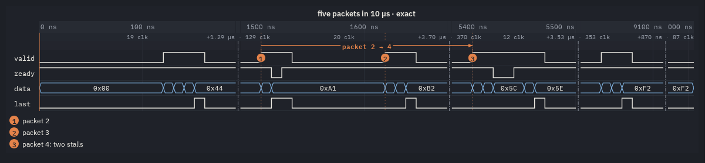
valid ready data last: four rows, cut by those four alone (the irq after
each packet no longer keeps a stretch).The clock the gaps count
idle and keep in cycles, the cut ends on rising edges and the N clk texts all use one clock. Unless you choose, it is
the clock of the rows: the selected signal's clock, else the nearest 1-bit *clk*; its cycle is the median distance between its rising
edges in the range. To choose, right-click a 1-bit signal and pick Count in cycles of this clock: it is marked
↑ in the names and named in the submenu (↑ clk ✕; ✕ returns to the clock found). Its own edges are no change, even when
the gaps follow every signal. Without any clock, a cycle is the model's cycle and the ends are not snapped.
With two clock domains in the picture, count in the clock of the domain whose transfers you want to show, and let the gaps follow that domain's signals.
One role per signal
A signal has one of three roles in the gaps, set from its menu, shown in the names column:
| Mark | Role | Menu item | Setting |
|---|---|---|---|
// | the gaps follow its changes (keep them) | By this signal: its changes kept | gapSignals |
↑ | the clock whose cycles are counted | Count in cycles of this clock (1-bit) | gapClock |
+ | counted in a gap: what it did in the stretch left out | Count its changes in a gap | gapAux |
Giving a signal a new role takes the old one away. only them takes all three kinds.
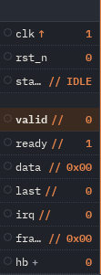
clk ↑ counted, the stream's signals //, hb + counted in
the gaps.The texts of a gap
The select in the second row of the submenu (setting gapCount) chooses what a picture says about its gaps:
- time, cycles (default,
clock): a thin row under the axis with, over each break, the time it leaves out and the clock's cycles in it (+89.0 ns · 89 clk), and in the middle of each part its own cycles (8 clk) when there is room. - + changes in a gap (
edges): the same, plus a thin row under each counted signal with, over each break, what it did in the stretch left out — a bit its rising and falling edges (6↑ 7↓), a bus its changes (2×). Counted are the signals marked+; none marked: every signal but the ones the gaps follow and the clock. - no texts (
off): only the breaks.
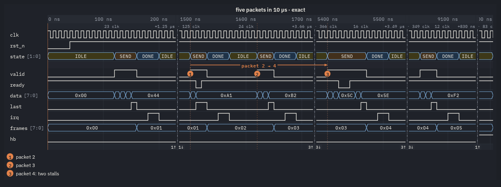
hb counted: under its row, over each break, how often it toggled in the time left out
(1↑ 1↓, 3↑ 3↓). Nothing of hb's activity is lost, though its waves are cut.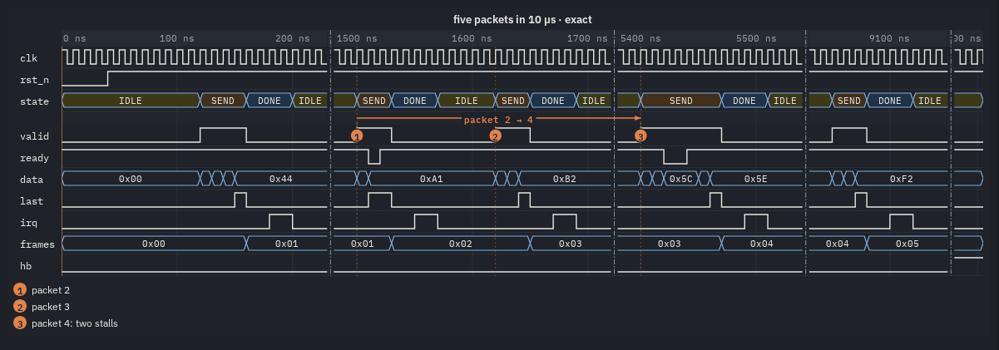
The line of a break
A break is a narrow column (8 px) across the rows; the rows' backgrounds go on through it. Its line is the setting gapLine (no menu
item; set it in the settings or the config):
dashdot (default) — a thin straight
dash-dot line, unlike a bookmark's dotted one.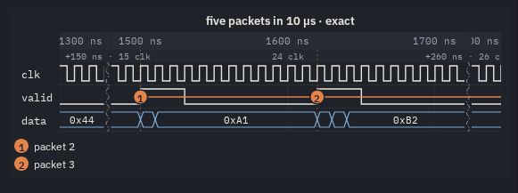
wave — one wavy line.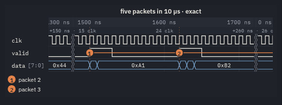
waves — two thin wavy lines.zigzag.double — two straight dashed lines, as a
break in a drawing.Bookmarks and arrows across gaps
A bookmark's time counts as a change, so it is never cut out — even where nothing happens. Arrows between bookmarks are drawn over the parts, across the breaks.
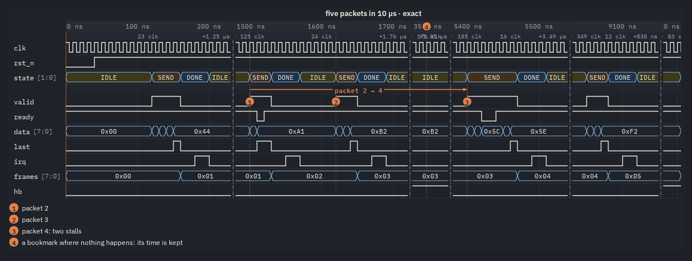
Gaps in the saved WaveDrom
Save as WaveDrom / Copy WaveDrom write one cell per clock cycle; with gaps on, every stretch left
out becomes one | cell in every wave, at the same index, and the foot says what was cut. The signals and the range are those of the
picture. An excerpt of the export of the run (five rows; the whole file: gaps-wavedrom.json):
{ "head": { "text": "five packets in 10 µs · exact: 0.00 µs … 10.01 µs" },
"foot": { "text": "one cell per clk cycle, | : 4 idle stretches left out (1.25 µs, 3.66 µs, 3.49 µs, 830 ns)" },
"signal": [
{ "name": "clk", "wave": "p......................|........................|................|............|..." },
{ "name": "valid", "wave": "0...........1...0......|..1..0........1..0......|..1......0......|..1..0......|..." },
{ "name": "ready", "wave": "1......................|...01...................|....0.1.........|............|..." },
{ "name": "data", "wave": "=...........====.......|..==..........===.......|..===..==.......|..===.......|...",
"data": ["0x00", "0x11", "0x22", "0x33", "0x44", "0xA0", "0xA1", …] },
…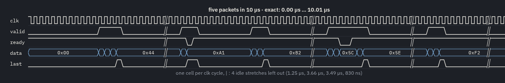
WaveSVG): each | cell is a break.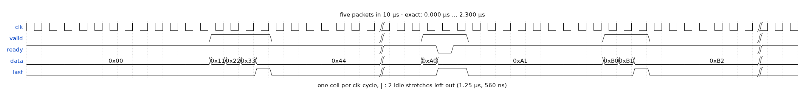
// where the cells are |. The
file opens in any WaveDrom editor.The viewer's WaveJSON has no time axis: the foot lists what each break left out. vcd2wavedrom.py writes the
"time" extension with "skip": [[k, n]] instead (the | cell at index k stands for n cycles), so
WaveLens draws its axis in real time; stock WaveDrom ignores it.
Gaps in the static SVG of a page
A static figure ("render": "svg" view, data-mode="svg", <script type="WaveDrom">) cuts its gaps
when its settings say so. Put them in the view's "config" (or the config file's top-level "config" for every view):
"views": {
"figure": {
"exact": true, "render": "svg",
"signals": ["clk", "state", "valid", "ready", "data", "last", "irq"],
"title": "the same run as a static SVG with gaps",
"config": { "gaps": true, "gapIdle": 16, "gapKeep": 2, "hscale": 0.35 }
}
}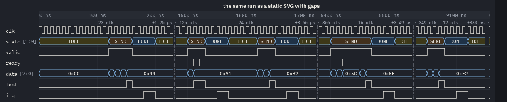
figure view of the page: drawn by mkhtml.py's page as a static SVG with the gaps of its
settings.In your own page, the same keys go into data-config: <div data-wave="…" data-mode="svg"
data-config='{"gaps": true, "gapIdle": "1us"}'>. Without a picked list, a static figure follows every row it draws, the clocks
aside.
From the command line
vcd2wavedrom.py --clock cuts the same idle stretches when it writes WaveJSON (one cell per clock cycle):
python3 -I tools/vcd2wavedrom.py --waves out/guides/stream.vcd --scope tb --clock clk \
--signals clk,valid,ready,data,last --auto-gap 16:2 --out stream.jsonclk p.................|....................|............|........|..
valid 0..........1...0..|..1..0........1..0..|..1......0..|..1..0..|..
ready 1.................|...01...............|....0.1.....|........|..
data =..........====...|..==..........===...|..===..==...|..===...|..
last 0.............10..|...1.0..........10..|........10..|....10..|..
"time": {"t0": 10000, "t1": 10010000, "cycle": 10000, "unit": "ps", "skip": [[18, 129], [39, 370], [52, 353], [61, 88]]}--auto-gap IDLE[:KEEP]— clock cycles; where no signal but a clock changes for IDLE cycles, all but KEEP (default 2) collapse into one|cell.--gap FROM:TO— one window by hand (--gap 200ns:300ns); repeatable, or"gap": ["A:B"]in a config.- The MCP server's
wave_pagetakes"auto_gap": "16:2"with a clock (see AI agents).
Where the gap settings live
- The settings (global
wavelens.config.js, a config's"config", a view's"config", the element'sdata-config) give the starting values — by default no gaps. - The menu changes them for this viewer only; they are kept in this browser (with the viewer's look) and come back after a reload.
- Save in the bar writes them into the viewer's state (
.view.json, its"config"), Load… reads them back; that"config"pastes into a config file as it is. - Reset the gaps at the bottom of the submenu drops every gap setting of the viewer (roles, counts, idle, keep) back to the settings.
Settings
| Key | Default | Meaning |
|---|---|---|
gaps | false | cut the idle stretches out of the pictures and WaveDrom (and static SVGs) |
gapIdle | 16 | a gap where nothing changes this long: clock cycles (16) or a time
("2us") |
gapKeep | 2 | kept after the last change and before the next one: cycles or a time |
gapSignals | none | the signals the gaps follow (full paths, names, * patterns); none: every signal
drawn |
gapClock | none | the clock whose cycles idle, keep and the texts count; none: the selected clock, else
the nearest *clk* |
gapAux | none | the signals counted in a gap (with gapCount: "edges"); none: every one but the
followed signals and the clock |
gapOnly | false | the viewer's picture and WaveDrom of those three kinds alone |
gapCount | "clock" | the texts: clock (time and cycles under the axis), edges
(also the counts under the counted signals), off |
gapLine | "dashdot" | the line of a break: dashdot, wave, waves,
zigzag, double |
A page that starts with gaps on for every viewer, following the handshakes of every stream port:
"config": { "gaps": true, "gapIdle": "1us", "gapKeep": 4, "gapSignals": ["*_tvalid", "*_tready", "*_tlast"], "gapClock": "tb.aclk" }When the gaps do not come
| You see | Why, and what to do |
|---|---|
| Gaps: 0 | Some row changes in every stretch — a counter, a heartbeat, a timestamp, a clock of another domain. Pick the signals that matter with By this signal. Or idle is longer than the pauses: lower it. |
| Many small parts | A slow signal splits the pauses (above): pick the signals, or count it (Count its changes in a gap) after picking the others. |
| Breaks in the wrong place | The picture takes the measured range, else the window; the selected run, else the highlighted rows, else the screen's rows — a hidden or folded row does not count. Check which rows the picture takes. |
| The cycles look wrong | The gaps count the wrong clock: Count in cycles of this clock on the right one. |
| A pause you wanted cut stays | A bookmark sits in it (its time is always kept), or keep is too large for it. |